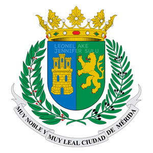
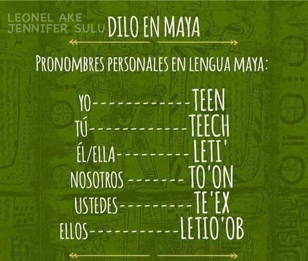

Ubicada a cuatro horas de Cancún, la capital de Yucatán ocupa el área de la que alguna vez fue la
importante ciudad maya de T'ho (“cinco cerros”) y la presencia cultural de esta antigua cultura
mesoamericana aún la impregna: más de la mitad de la población en Mérida es maya y por tanto, el
idioma maya se mantiene vivo.
Conquistada y fundada por Francisco “el Mozo” Montejo en 1542, su riqueza y diversidad cultural la ha
posicionado como Capital Americana de la Cultura en dos ocasiones. Sede de múltiples festivales y eventos
culturales, es, además, una de las ciudades más seguras de todo el país. Con un pasado que se respira en cada
rincón, hoy en día es una urbe moderna, que se preocupa y ocupa por la calidad de vida de sus habitantes y
visitantes; cuenta con un sistema de movilidad que privilegia a peatones y ciclistas, hospitales y escuelas,
parques, actividades recreativas, artísticas, vivienda digna.
Con más de un millón de habitantes, Mérida es una ciudad llena de colores que no deja de asombrar a todos los que la conocen. Sabiendo esto, hoy en Guardabox te contaremos las cosas que tienes que saber de Mérida.
Curiosidades

Escudo de Mérida
En 1618, Mérida obtuvo su Escudo de Armas.
En términos heráldicos, el león rampante
simboliza majestad, valor y fuerza; el castillo
denota grandeza y tenaz resistencia ante el enemigo; el
color azul representa virtudes como lealtad y justicia,
mientras que el verde significa esperanza, libertad e
intrepidez.

La Cultura Maya
Ya sea en la gastronomía, en el idioma que mezcla el español
con palabras y expresiones de la lengua maya, en la ropa, en la música,
en la vida diaria... basta recorrer la ciudad, sus barrios, mercados y
alrededores.
Las lenguas maternas son esenciales para la identidad cultural
y la transmisión de conocimientos y valores.